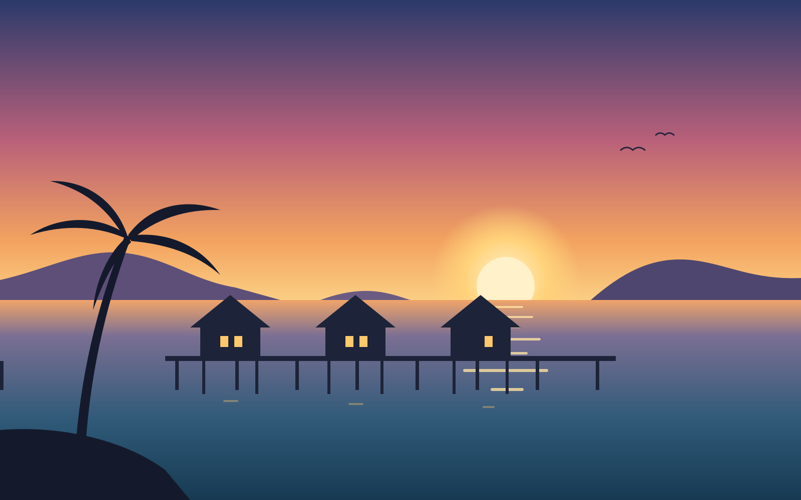

Teluk Senja Resort, Pulau Tioman
Scroll inside this frame. The window opens onto the bay.

26 water chalets on Teluk Senja
From RM 418 a night with breakfast for two. Sunset tonight at 7:12 pm.
Getting here
The ferry leaves Mersing jetty at 8:30 am and 1:15 pm and takes about 1 hour 50 minutes. Our boat meets every ferry at Tekek and runs you to the chalets in 12 minutes.
Check in from 2:00 pm. Snorkel sets are at the jetty hut, free for guests.